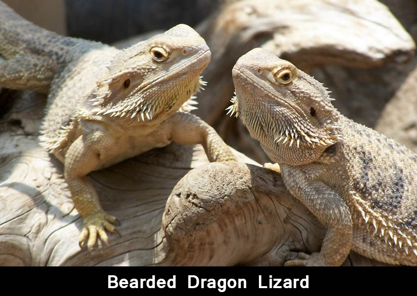
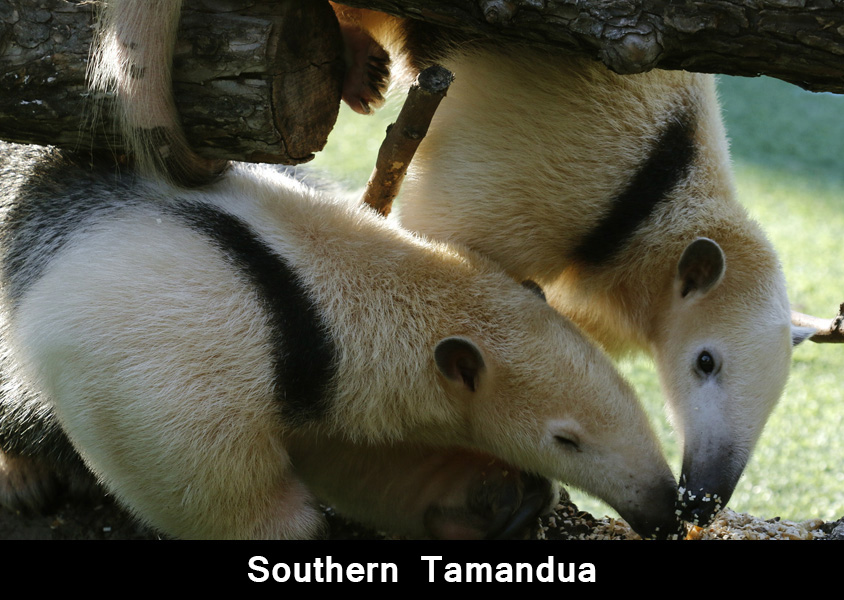

The axolotl also known as a Mexican salamander or a Mexican walking fish, is a neotenic salamander, closely related to the tiger salamander. Although the axolotl is colloquially known as a "walking fish", it is not a fish, but an amphibian. The species originates from numerous lakes, such as Lake Xochimilco underlying Mexico City. Axolotls are unusual among amphibians in that they reach adulthood without undergoing metamorphosis. Instead of developing lungs and taking to the land, adults remain aquatic and gilled. Axolotls should not be confused with waterdogs, the larval stage of the closely related tiger salamanders , which are widespread in much of North America and occasionally become neotenic. Neither should they be confused with mudpuppies , fully aquatic salamanders that are not closely related to the axolotl but bear a superficial resemblance.
Pogona is a genus of reptiles containing eight lizard species, which are often known by the common name bearded dragons. The name "bearded dragon" refers to the "beard" of the lizard, the underside of the throat which turns black if they are stressed or see a potential rival. They are adept climbers, spending time on branches and in bushes and near human habitation. Pogona species bask on rocks and exposed branches in the mornings and afternoons. They are found throughout much of Australia in a wide range of habitats such as deserts, shrublands and Eucalyptus woodlands. Several species of this genus, especially the central bearded dragon, are often kept as pets or exhibited in zoos due to their hardy nature and easy care in comparison to other exotic reptiles.
The Southern Tamandua, also called the collared anteater or lesser anteater, is a species of anteater from South America. It is a solitary animal, found in many habitats from mature to highly disturbed secondary forests and arid savannas. It feeds on ants, termites, and bees. Its very strong fore claws can be used to break insect nests or to defend itself.